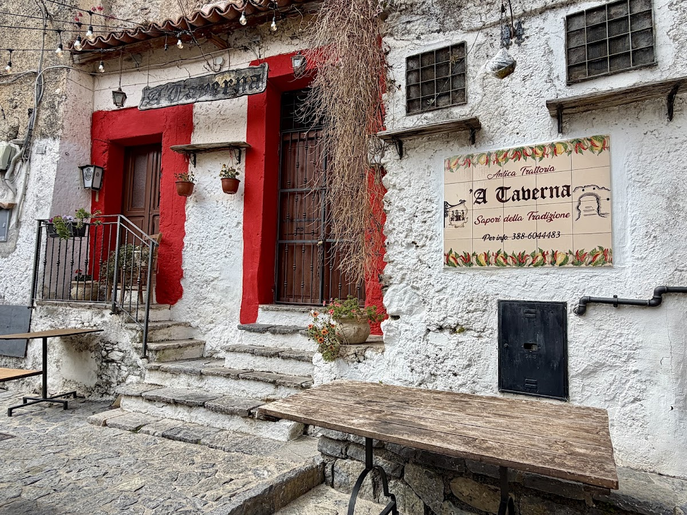
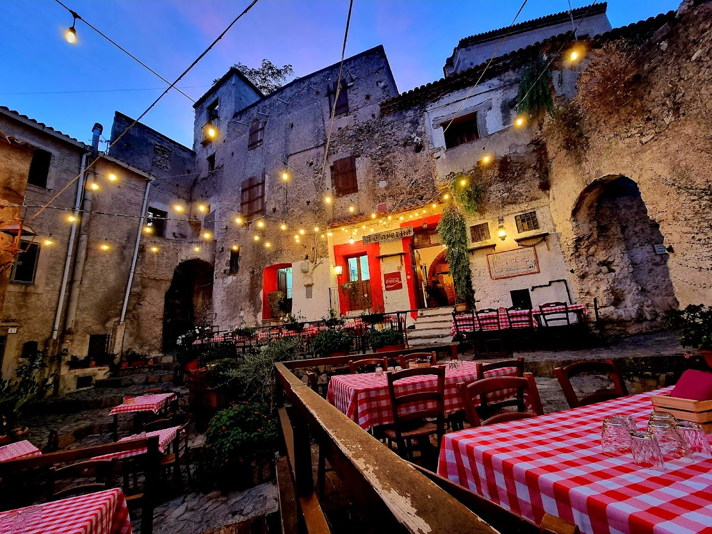
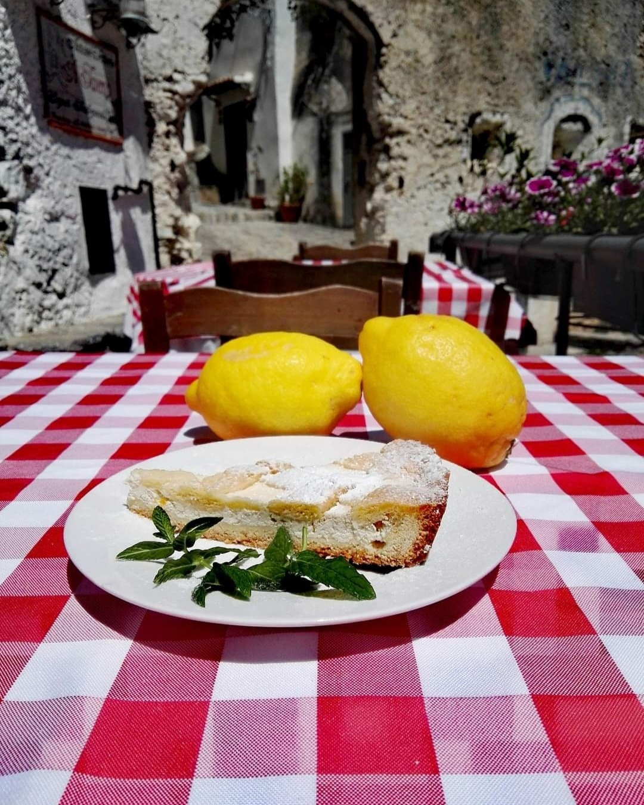
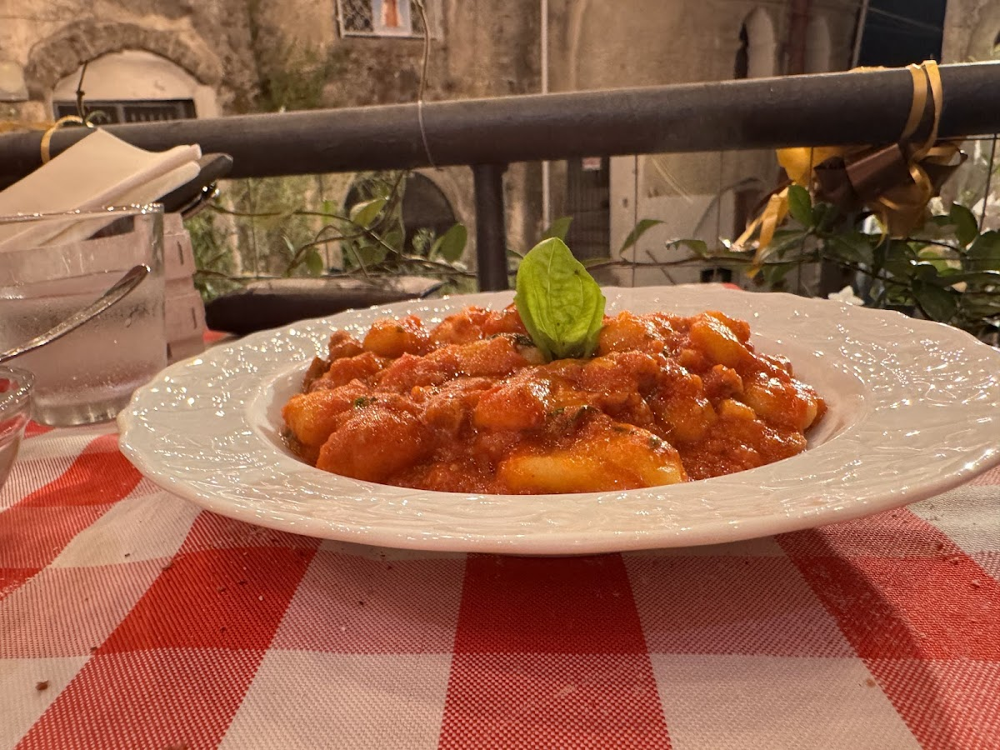
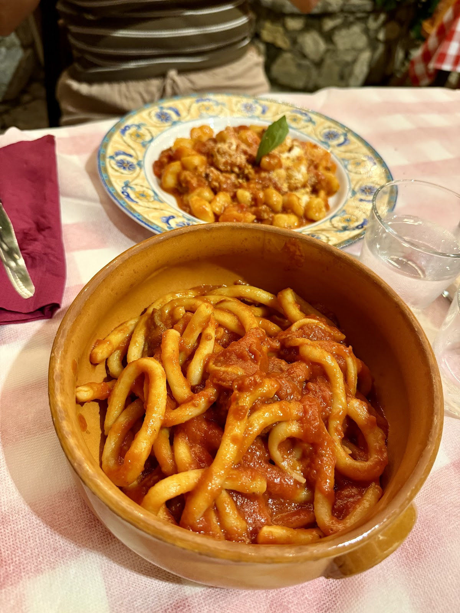

Sotto le lucine del borgo, da sempre.
Under the village lights, always.
Una trattoria incastonata in una piccola vietta del centro antico di Scalea. Terrazza di pietra, tovaglie a quadretti, cucina calabrese. Solo la sera, solo chi sa trovarci.
A trattoria tucked into a small alley of Scalea's old town. Stone terrace, checkered tablecloths, Calabrian cuisine. Evenings only — for those who know where to look.

La Nostra TavernaOur Tavern
A' Taverna vive incastonata nel centro storico di Scalea. Dalla porta rossa si scende nella terrazza di pietra, dove le lucine accese sopra le teste e le tovaglie a quadretti bianchi e rossi fanno il resto. La cucina è quella di sempre — gnocchi, parmigiana, fusilli al sugo di capra, dolci fatti in casa.
A' Taverna sits within Scalea's old town. Through the red door you descend to the stone terrace, where the lights overhead and the red-and-white checkered tablecloths do the rest. The cooking is what it's always been — gnocchi, parmigiana, fusilli with goat sauce, homemade desserts.
La parte migliore di A' Taverna è dove si mangia. Non lo cerchiamo di nascondere.
The best part of A' Taverna is where you eat. We don't try to hide it.
La LocationThe Location
Cenare qui significa entrare in un altro tempo. Le stelline accese sopra i tavoli, le pareti di pietra bianca, l'odore del sugo che sale dalle cucine dei vicoli. Un'esperienza che riconosci solo quando la vivi.
Dining here means stepping into another time. Fairy lights overhead, white stone walls, the scent of sauce rising from kitchens in the alleys. An experience you only recognise when you live it.
ScorciGlimpses




Le RecensioniReviews
Recensioni reali da Google. Non solo quelle lusinghiere — anche quelle che ci aiutano a migliorare.
Real reviews from Google. Not only the flattering ones — also the ones that help us improve.
Partiamo dalla location molto suggestiva, quasi magica, incastonata in uno scorcio antico di Scalea. Il servizio eccellente, le signore che ci hanno servito molto cortesi.
Let's start with the very suggestive, almost magical location, nestled in an ancient corner of Scalea. Excellent service, the ladies serving us very courteous.
Francesca Mammone
Un bellissimo localino con in atmosfera calda e accogliente. Prezzi con ottimo rapporto qualità prezzo. I primi sono assolutamente da provare.
A beautiful little place with a warm, welcoming atmosphere. Good value for money. The first courses are absolutely worth trying.
Mario Daione
Trattoria tipica di cucina calabrese situata nella parte antica di Scalea. Una posizione davvero molto romantica soprattutto la sera. Ottimi piatti.
Typical trattoria of Calabrian cuisine in old Scalea. A truly romantic location, especially in the evening. Great dishes.
Sara Pellegrino
Location veramente suggestiva e caratteristica. Siamo stati a cena un sabato sera di fine luglio, l'atmosfera tra le pietre antiche è unica.
Truly suggestive, characteristic location. We went for dinner on a late-July Saturday; the atmosphere among the old stones is unique.
Greta Fuschetto
Location da sogno, ma cibo e servizio a volte deludono. L'atmosfera romantica e conviviale perfettamente integrata nel borgo antico resta la cosa più bella.
Dreamy location, but food and service sometimes disappoint. The romantic atmosphere set in the old village remains the best part.
Bartolomeo
The terrace under the fairy lights is pure magic. Simple Calabrian cooking, but the setting makes the evening unforgettable.
Google Review
Google · EN
PrenotazioniReservations
Apriamo solo per cena, dalle 20. Per trovare il vicolo: scendete nel centro storico, porta rossa accanto alle scale in pietra.
We open for dinner only, from 8 PM. To find the alley: descend into the old town, red door next to the stone stairs.
Tutti i giorni · 20:00 — 00:30
Every day · 8 PM — 12:30 AM
Vico Municipale, 41
87029 Scalea (CS)
Nel centro storico, porta rossa accanto alle scale.
In the old town, red door next to the stone stairs.
Vico Municipale, 41
Centro Storico · Scalea
+39 388 604 4483